- 某些运动轨迹设置仅在属性编辑器(Attribute Editor)中可用。请参见本主题末尾的属性编辑器特定的运动轨迹设置。
- 如果未选择任何对象，则在“运动轨迹编辑器”(Motion Trail Editor)中修改值时，将更改任何新运动轨迹的默认值。但是，如果选择了一个运动轨迹并显示该运动轨迹的值，则更改这些值将仅修改选定的运动轨迹。这不会更改“运动轨迹编辑器”(Motion Trail Editor)中未来的默认值。
运动轨迹菜单栏
运动轨迹菜单栏
- 编辑(Edit)
- “编辑”菜单有两个选项：
- 重置设置(Reset Settings)：恢复“运动轨迹编辑器”(Motion Trail Editor)的所有默认值。
- 将设置保存为默认值(Save Settings as Default)：将“运动轨迹编辑器”(Motion Trail Editor)的当前设置保存为默认值，以供以后使用。（仅当选择运动轨迹时，此选项才处于活动状态。）
- 帮助(Help)
- 打开此主题可快速访问该编辑器中各项设置的说明。
设置(Settings)
这些特性表示运动轨迹的外观。
- 绘制样式(Draw Style)
- 选择何时查看运动轨迹：
-
- 始终绘制(Always Draw)
-
选择“始终绘制”(Always Draw)以显示运动轨迹，即使未选择对象。
- 选择时绘制(Draw when selected)
- 选择“选择时绘制”(Draw When Selected)可仅在单击对象时显示运动轨迹。
-
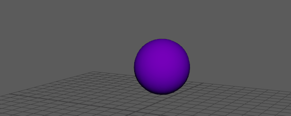
- X 射线绘制(X-Ray Draw)
- 选择“X 射线绘制”(X-Ray Draw)可在对象内部显示运动轨迹。
-
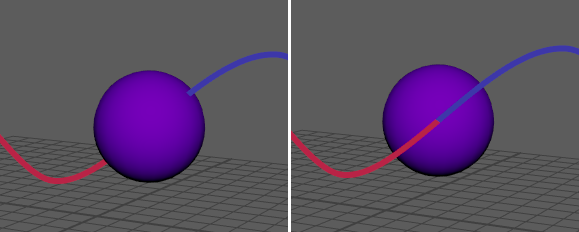
左：球体经过运动轨迹（默认）右：运动轨迹的 X 射线绘制
- 绘制模式(Draw Mode)
-
选择希望运动轨迹显示的内容：
-
- 过去/未来(Past/Future)
- 通过“轨迹颜色”(Trail Color)和“备用轨迹颜色”(Alternate Trail color)设置所定义的颜色来区分当前帧之前和之后的动画，从而让您看到当前帧之前和之后的动画。（请参见运动轨迹显示设置。）
-
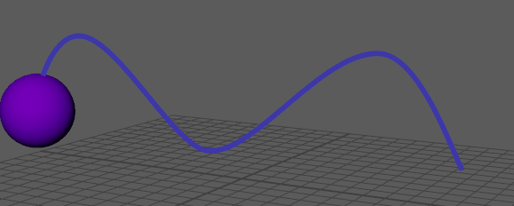
- 恒定(Constant)
-
始终以相同的颜色显示运动轨迹。
-
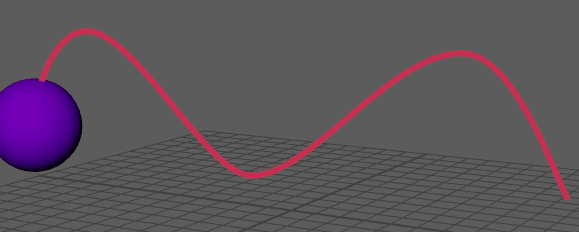
- 交替帧(Alternating Frames)
-
以“轨迹颜色”(Trail Color)和“备用轨迹颜色”(Alternate Trail color)设置中定义的交替颜色显示每个帧。（请参见本主题中更下方的“显示设置”(Display Settings)。） 通过使用“交替帧”(Alternating Frames)，您可以沿运动轨迹查看动画的速度：帧分段越小，动画速度越慢；帧分段越长，动画速度越快。
-
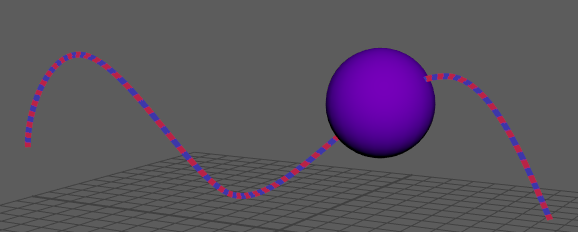
- 速度(Velocity)
- 使用颜色创建“热量贴图”，以显示动画对象的加速度。在动画速度较慢的区域，运动轨迹显示一种颜色，而在动画速度较快的区域，颜色会改变。路径的颜色渐变可用于区分不同的速度。
- 请参见“运动轨迹编辑器”(Motion Trail Editor)的“显示设置”(Display Settings)部分中设置的“快速”(Velocity Fast)和“慢速”(Velocity slow)颜色。
-
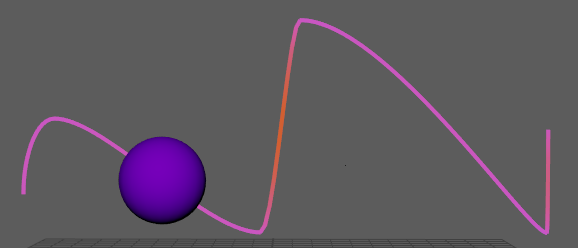
- 锚点(Anchor)
- 相对于场景中的摄影机或其他对象创建运动轨迹，并隔离相对于动画其余部分的移动。在“世界”(World)、“对象”(Object)和场景中的任何摄影机之间进行选择。将“锚点”(Anchor)应用于摄影机动画，以可视化移动摄影机镜头内对象的运动。请参见在摄影机空间中分析动画。
- 选择“世界”(World)可显示对象相对于世界坐标系的运动轨迹。这样，如果移动对象，轨迹不会改变。
- 使用“对象”(Object)可显示相对于上一个选定对象的对象轨迹，以便在变换对象时轨迹会改变。
如果对象旋转 45 度，并在“世界”(World)模式下创建运动轨迹，则路径看起来就像对象沿对角线移动一样。但是，如果在“对象”(Object)模式下创建运动轨迹，则路径看起来就像对象上下移动一样，因为该运动轨迹相对于对象的坐标系。
- 运动轨迹方向图标
-
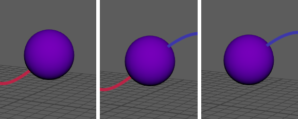
-
选择运动轨迹的显示方式：“之前”(Before) 、“之前和之后”(Before and After)
 或“之后”(After) 。
或“之后”(After) 。
- 增量(Increment)
-
设置对运动轨迹进行采样和绘制的频率，主要是指定运动轨迹线的分辨率。默认值为 1，因此运动轨迹在每一帧都会进行采样。例如，如果将“增量”(Increment)设置为 5，则每五帧对运动轨迹点进行采样和绘制。如果运动轨迹关键帧落在采样点上，则在轨迹上绘制。
如果将“增量”(Increment)设置为较大的值，则可以提高性能，因为在运动轨迹上绘制的关键帧较少。有时，不在采样点上的运动轨迹关键帧可能会偏移轨迹绘制。
-
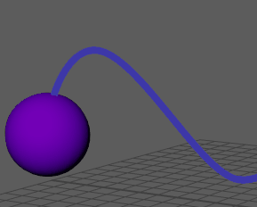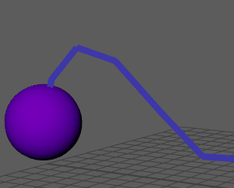
比较：运动轨迹的“增量”(Increment)设置为 0 和 10
- 前帧(Pre-Frames)
- 指定绘制运动轨迹的当前时间之前的帧数。如果值为 0（默认值），则绘制的运动轨迹从当前帧回到起始帧。
-
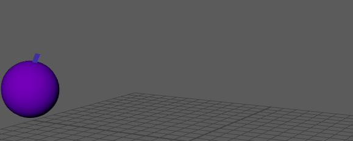
“前帧和后帧”(Pre and Post Frames)设置为 10 帧，从而缩短运动轨迹。
- 后帧(Post Frames)
- 指定绘制运动轨迹的当前时间之后的帧数。如果值为 0（默认值），则绘制的运动轨迹从当前帧到最后一帧。
- 创建运动轨迹(Create Motion Trail)
- 为选定对象创建运动轨迹。运动轨迹一旦存在，就会显示在运动轨迹列表中。
- 运动轨迹列表(Motion Trail List)
- 显示场景中的所有运动轨迹。
- 单击运动轨迹旁边的眼睛图标
 可显示或隐藏该运动轨迹。双击运动轨迹可对其进行重命名。
可显示或隐藏该运动轨迹。双击运动轨迹可对其进行重命名。
- 单击“更新”(Update)图标 可刷新运动轨迹，使其与时间滑块上显示的时间范围匹配。
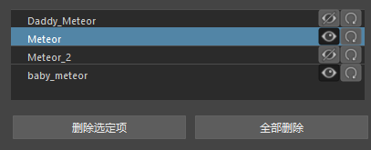
运动轨迹列表区域
注： 同一对象上可以有多个运动轨迹。名称按数字递增，例如 objectname_motionTrail1、Objectname_motionTrail2，等等。 - 删除选定对象(Delete Selected)/全部删除(Delete All)
-
删除当前在运动轨迹列表中选择的运动轨迹，或删除场景中的所有运动轨迹。
编辑设置(Edit Settings)
运动轨迹“编辑设置”(Edit Settings)部分
- 局部位置(Local Position)
- “局部位置”(Local Position)设置可用于调整运动轨迹相对于源对象的位置：
-
- 枢轴(Pivot)
- 绘制对象旋转枢轴处的运动轨迹。例如，与挥剑的运动一样，剑心和剑尖的运动是不同的。
- 拖动对象时，运动轨迹会适应新位置。
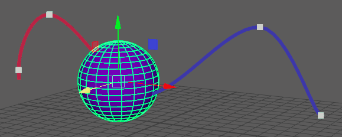
- 自定义(Custom)
- 用于为运动轨迹设置自定义对象空间位置。单击“自定义”(Custom)选项可输入特定位置坐标字段，或单击“移动”(Move)图标 可手动重新定位运动轨迹。
注： 在激活“自定义”(Custom)选项之前，请选择运动轨迹。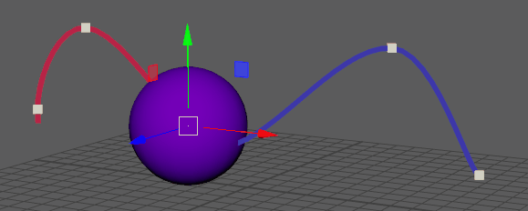
- 同一对象上可以有多个运动轨迹，您还可以使用“自定义”(Custom)选项来定位这些运动轨迹，例如，在飞机的每个翼尖添加一个运动轨迹。

两个运动轨迹位于同一对象上，但位置不同
显示设置(Display Settings)
- 显示关键帧(Show Key)
- 激活此选项可指示为对象设置的关键帧。在“标记”(Markers)和“编号”(Numbers)之间选择。关键帧标记在动画中每个帧出现的点处显示一个方形，而关键帧编号则显示帧编号。
-
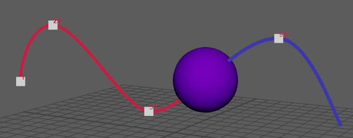
关键帧标记和编号均处于活动状态
- 显示帧(Show Frame)
- 激活此选项可指示与对象的动画相对应的帧编号。在“标记”(Markers)或“编号”(Numbers)之间进行选择，前者在每个帧的位置处显示小加号 (+)，后者显示相应的帧编号。
-
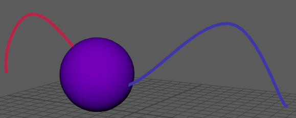
帧标记，然后帧编号
- 轨迹厚度(Trail Thickness)
- 可用于指定运动轨迹的大小。默认设置为 2。
-
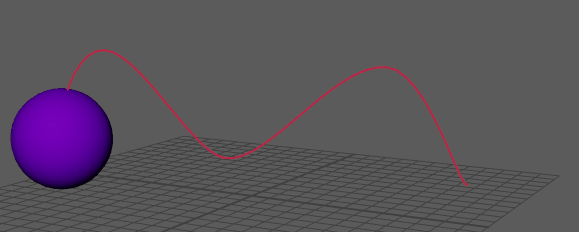
- 关键帧标记大小(Key Marker Size)
- 用于指定关键帧标记的显示大小。
-
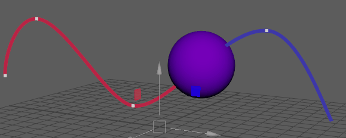
- 帧标记大小(Frame Marker Size)
- 用于指定帧标记的显示大小。
- 颜色设置(Color Settings)
- 使用滑块或双击值旁边的色样，为视口中的运动轨迹元素选择自定义颜色。
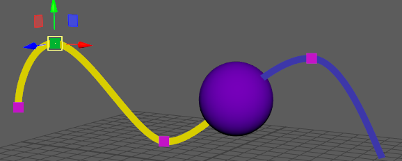
运动轨迹的自定义颜色
- 可以设置关键帧、选定关键帧、帧和速度的颜色。当“绘制模式”(Draw Mode)设置为“恒定”(Constant)以外的模式时，还可以设置“轨迹颜色”(Trail Color)和“备用轨迹颜色”(Alternate Trail Color)。
-
提示： 若要设置运动轨迹颜色以匹配动画对象，请单击“运动轨迹编辑器”(Motion Trail Editor)的“显示设置”(Display Settings)中的“轨迹颜色”(Trail Color)颜色图块以打开“颜色”(Color)窗口。在对象上使用吸管工具选择颜色。

属性编辑器特定的运动轨迹设置
以下运动轨迹设置仅显示在属性编辑器(Attribute Editor)中，因为它们只在特定情况下使用。
- 绘制轨迹(Draw Trail)
- 此设置与“运动轨迹编辑器”(Motion Trail Editor)中的运动轨迹方向图标相同，可让您设置运动轨迹的显示方式：“当前帧之前”(Before current frame)、“所有帧”(All frames)或“当前帧之后”(After current frame)。
- 褪色帧(Fade Frames)
- 创建褪色效果，该效果按指定的帧数持续。
-
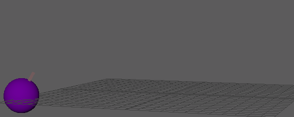
- 缩放/旋转关键帧标记(Scale/Rotate Key Markers)
- 以“缩放/旋转关键帧颜色”(Scale/Rotate Key Color)设置中设置的颜色显示为缩放和旋转而设置的关键帧标记。
-
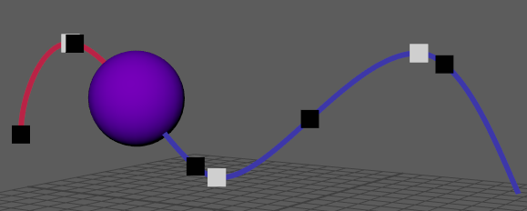
- 缩放/旋转关键帧颜色(Scale/Rotate Key Color)
- 用于拾取颜色以定义为缩放和旋转设置的关键帧标记。“缩放/旋转关键帧标记”(Scale/Rotate Key Markers)设置必须处于活动状态。
- 编辑入/出切线(Edit In/Out Tangent)
- 显示入切线/出切线。在运动轨迹上的关键帧上单击鼠标右键时，可以在运动轨迹标记菜单中将此操作作为“显示切线”(Show Tangents)进行访问
- 编辑入/出调整钮(Edit In/Out Beads)
-
注： 计时调整钮只能为具有加权切线的曲线显示。可以在“曲线图编辑器”(Graph Editor)中将切线设置为加权。请参见更改切线权重。
- 在运动轨迹上显示和调整计时调整钮，以便控制动画在每个关键帧上的缓入和缓出。每个调整钮表示时间中的一帧。调整关键帧任一侧的计时调整钮间距时，可以减慢或加快对象的移动。拉伸计时调整钮会减慢对象进入或离开关键帧的移动速度，而压缩调整钮会加快移动速度。
- 在运动轨迹上的关键帧上单击鼠标右键时，还可以在运动轨迹标记菜单中访问此操作。请参见在运动轨迹上修改关键帧主题中的显示和编辑计时调整钮。
- 添加/移除关键帧(Add/Remove Keys)
- 用于在运动轨迹上插入、移动或删除关键帧。请参见在运动轨迹上修改关键帧。
- 在运动轨迹上的关键帧上单击鼠标右键时，还可以在运动轨迹标记菜单中访问此操作。
- 编辑标记颜色(Edit Marker Color)
- 用于为标记拾取颜色。